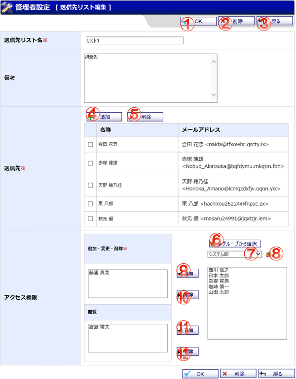

WEBメールの送信先リスト編集画面です。

機能説明
OKボタン送信先リスト登録確認画面へ遷移します。 |
削除ボタン削除確認画面へ遷移します。 |
|---|---|
戻るボタン遷移元の画面に遷移します。 |
追加ボタンポップアップでユーザ情報画面が表示され、送信先を選択します。 |
削除ボタン選択した送信先を削除します。 |
全グループから選択ボタンポップアップで全グループから選択画面が開きます。 |
グループコンボ選択したグループに所属するユーザがユーザリストに表示されます（既にメンバーに追加されているユーザは表示されません）。 |
グループボタンポップアップでグループ選択画面が開きます。 |
追加ボタンユーザリストで選択されているユーザを、追加・変更・削除リストに追加します。 |
削除ボタン追加・変更・削除リストで選択されているユーザを、追加・変更・削除リストから除外します。 |
追加ボタンユーザリストで選択されているユーザを、閲覧リストに追加します。 |
削除ボタン閲覧リストで選択されているユーザを、閲覧リストから除外します。 |
表示・入力項目説明
送信先リスト名
送信先リスト名を入力します。
備考
備考を入力します。
送信先
送信先一覧を表示します。
アクセス権限
送信先リストに対する追加・変更・削除・閲覧のアクセス権限を表示します。